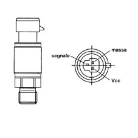

1043BB CHECK ON LPG PRESSURE SENSOR OPERATION
- Path
- Test > 10 ENGINE > 1043 GPL TANK AND PIPES > 1043B GPL FUEL CIRCUIT PIPES > 1043BB CHECK ON LPG PRESSURE SENSOR OPERATION
- Kind
- test / check procedure
- Applies to
- engines: 2.0 16V; all production periods; only with equipment: GPL
- Interactive page
- https://sloeber94.github.io/elrnDB-fDct/en/#/244000539
Applies to: all engines; all production periods
Check LPG pressure sensor K053
Applies to: all engines; all production periods; only with equipment: GPL
With the ignition switched on, check that the sensor supply is about 5 Volt. With the engine running, check that the sensor output voltage signal is between 1 and 4V.
DESCRIPTION | CONNECTOR | |
|---|---|---|
- | LPG pressure sensor |
